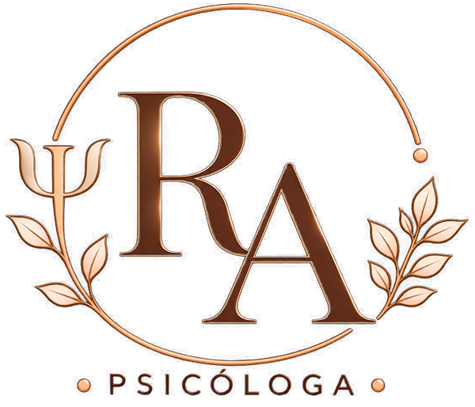

Tentativa de engravidar
Ansiedade, expectativas e perdas.

Cuidado psicológico on-line para mulheres em todas as fases da maternidade: da tentativa de engravidar ao pós-parto, com respeito e olhar humano.
Sou Rosemeire Almeida Cabral, psicóloga, graduada em Psicologia pela UNIP, com pós-graduação em Psicologia da Gravidez, Parto e Pós-Parto.
Acredito em um cuidado psicológico que acolhe a história de cada mulher, com escuta, respeito e olhar humano para todas as fases da maternidade.
CRP-01/16831
Ofereço um espaço de escuta e acolhimento para cuidar da sua saúde emocional em diferentes momentos da maternidade:
Ansiedade, expectativas e perdas.
Mudanças emocionais, medos e preparação para o parto.
Adaptações, identidade materna e saúde emocional.
Acolhimento do luto e reconstrução de novos sentidos.
Autocuidado, questões emocionais, relações e transições.
Você me chama pelo WhatsApp e conversamos sobre o que está sentindo e o que busca.
Combinamos juntas o melhor dia e horário para o seu atendimento.
Atendimento psicológico por videochamada, em um espaço acolhedor no conforto da sua casa.
Atendimento psicológico on-line (por videochamada), com um espaço acolhedor no conforto da sua casa.
Depoimentos ilustrativos para a proposta visual — substituir pelos reais.
“Me senti ouvida sem julgamentos em um momento em que tudo parecia confuso. Foi essencial na minha gestação.”
— Paciente (gestante)
“O acolhimento no pós-parto me ajudou a entender minhas emoções e a me reencontrar como mulher e mãe.”
— Paciente (pós-parto)
“Encontrei um espaço seguro para viver meu luto com respeito e delicadeza.”
— Paciente
Sim. Os atendimentos são feitos por videochamada, com sigilo e acolhimento, no conforto da sua casa.
Não. Atendo mulheres desde a tentativa de engravidar, passando pela gestação, pós-parto e outras fases da maternidade, inclusive em situações de perda.
Basta me chamar pelo WhatsApp. Combinamos juntas o melhor dia e horário.
Os valores e formas de pagamento são informados no primeiro contato pelo WhatsApp.
Sim. O sigilo é um princípio ético da profissão, regida pelo Conselho Regional de Psicologia (CRP).
Dê o primeiro passo para cuidar da sua saúde emocional.